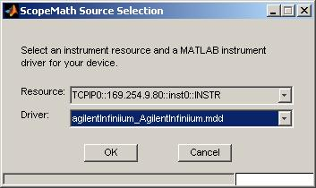
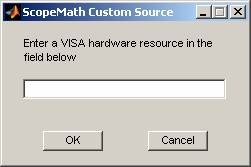
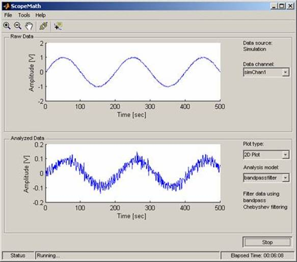

This demo illustrates how to collect data from an oscilloscope and use MATLAB to perform mathematical calculations and visualizations with the data. Combining MATLAB with your oscilloscope transforms the scope into a complete test bench station. In one device, you now have direct access to reliable scope measurements as well as advanced data analysis and report generation capabilities.
The demo was created using the MATLAB Instrument Control Toolbox. The toolbox provides features for communicating with instruments such as oscilloscopes and function generators. Support is provided for GPIB, VISA, serial, TCP/IP, and UDP communication protocols. Additionally, the Instrument Control Toolbox supports VXIplug&play and IVI instrument drivers. This version of the demo supports only the instrument drivers created from IVI drivers.
To use ScopeMath, you must install these hardware and software components:
After starting, ScopeMath displays a Source Selection dialog:

1. From the Driver menu, select a MATLAB instrument driver appropriate for the device you are using. ScopeMath automatically populates the Resource menu with values for which the VISA driver is configured.
2. From the Resource menu, select a hardware resource for your instrument. Optionally, you can choose to use a custom hardware resource, or you can run ScopeMath in simulation mode.
|
If you select… |
Then… |
|
Simulation |
ScopeMath ignores the driver value. |
|
Custom |
ScopeMath displays a dialog. Enter a VISA resource string for the device and click OK.  |
3. Click OK in the Source Selection dialog. At this point, ScopeMath will connect to the instrument and compare the model of the instrument to the model listed for the instrument driver. If the two do not match, the following dialog is displayed:
4. The ScopeMath window is displayed after you have selected your device and driver.

The ScopeMath window is divided into two regions. The top contains a plot for displaying the raw data and a control for selecting the channel from the instrument. The bottom contains a plot for displaying results of the analysis function performed on the raw data and controls to change the plot type and specify the analysis function.
5. From the Data Channel menu, select the oscilloscope channel. The oscilloscope model is listed under Data Source for reference.
6. From the Plot Type menu, select the type of plot you want to use to display your analyzed data: 2-D plot or Waterfall plot. The waterfall plot draws a mesh similar to the surf function; however, it does not generate lines from the columns of the matrices. This produces a “waterfall” effect.
7. From the Analysis model menu, select the name of the function you would like to use to analyze your data. See Analysis Function Help in the Help menu for a description of the functions.
8. Click Start to collect data from the oscilloscope. The results are displayed in the plots.
You can explore different regions of the plots with the Zoom In, Zoom Out, Pan, and Data Tip tools. The plots are unlinked by default. You can link them by clicking the Link () button. The exploration and link tools are disabled when ScopeMath is running or the Waterfall plot is selected.